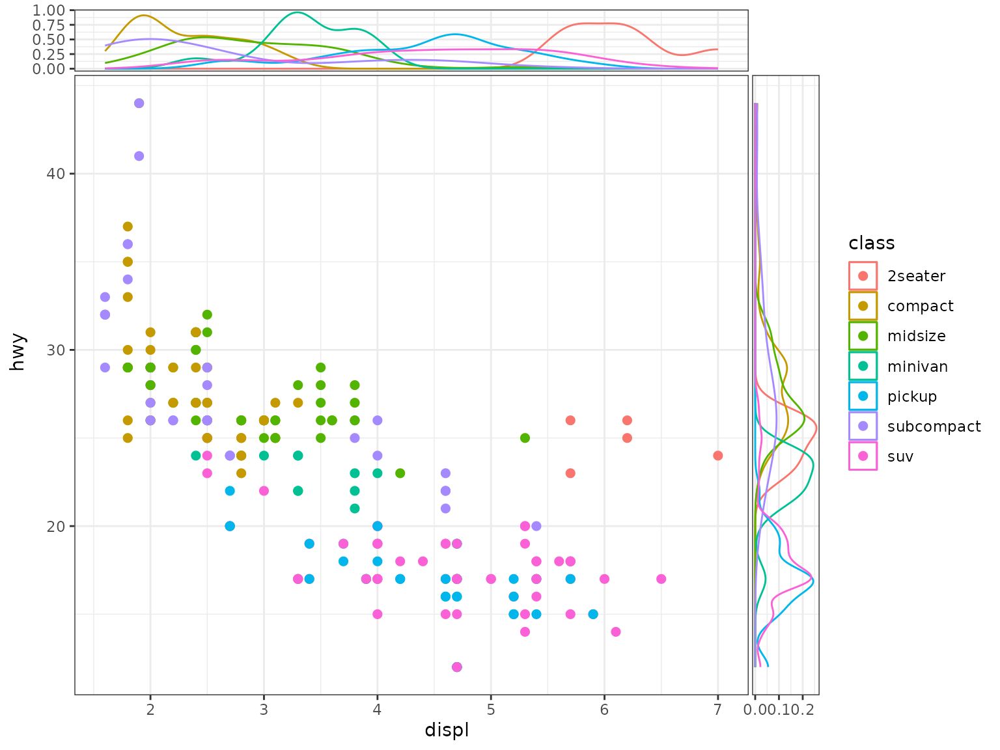
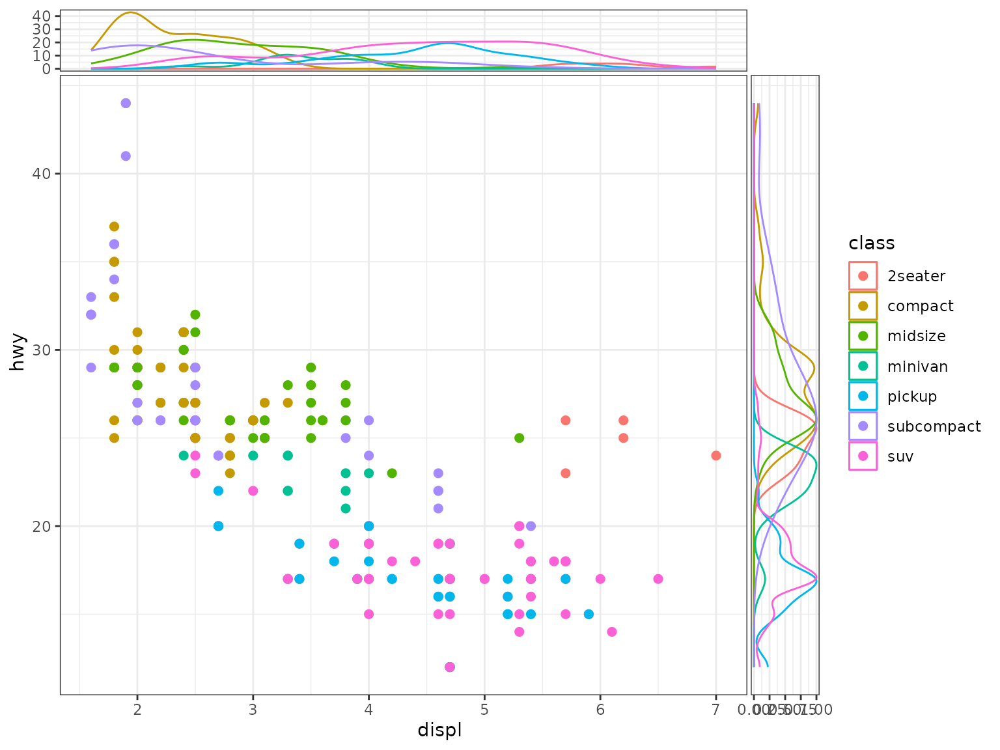
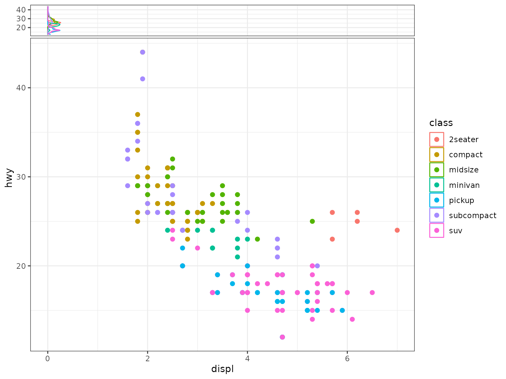

Global Aesthetics Mappings and Side Geometries
Source:vignettes/ggside_aes_mapping.Rmd
ggside_aes_mapping.Rmd
p <- ggplot(mpg, aes(displ, hwy, colour = class)) +
geom_point(size = 2) +
theme_bw()The purpose of this vignette is to document a slight change
in API expectation with certain geom_*side* when there are
global aesthetic mappings for both x and
y.
In ggside (<0.1.0), the user was expected to
explicitly map all computed aesthetics, especially in the case when
x and y are mapped globally for the main
panel. The nature of ggside is generally to plot
supplemental data, and the user will likely want to inherit the
x global mapping if they use a geom_xside*
geometry, but map something different to y.
This decision was made in order to keep all geom_*side*
geometries as similar to their ggplot2::geom_* geometry
counterparts. However, using ggside becomes a tad bit
annoying when you must specify every positional
aesthetic, especially when it obvious what the user may want.
In ggside (>=0.1.0), certain geom_*side*
geometries will use the default aesthetic mapping of the associated
Stat, depending on the orientation
parameter.
For example, geom_xsidedensity will ignore the
y global mapping and assign
y = after_stat(density) to that layer’s aesthetic mappings
if no y mapping was specified. The same can be said for
geom_ysidedensity, it will ignore the x global
mapping and assign x = after_stat(density) if no
x mapping was specified.
This should be much less typing.
p +
geom_xsidedensity() +
geom_ysidedensity()
Of course, if you would like to use a different computed variables, you will need to specify it like normal.
p +
geom_xsidedensity(aes(y = after_stat(count))) +
geom_ysidedensity(aes(x = after_stat(scaled)))
You can even use geom_xsidedensity(orientation = "y") to
force it to inherit the y global mapping and map
x = after_stat(density). I don’t expect many users will do
this, but the option is available nonetheless.
#
p +
geom_xsidedensity(orientation = "y") #just use geom_ysidedensity() 
Side Geometries With Functionality
The following geom_*side* geometries have been updated
such that the default expected behavior is easier to use.
geom_*sidedensitygeom_*sidebargeom_*sidefreqpolygeom_*sidehistogram
This can only be applied to geometries that have a stat
other than "identity" with a default_aes. If
the geometries have an orientation parameter, this can
control which aesthetic is inherited. geom_*sideboxplot and
geom_*sideviolin are not included in this update
because the orientation largely depends the aesthetic
mapping of the layer, and these two geometries could go either way
depending on position scales of x and y.
All other geom_*side* geometries will need their
mappings to be explicitly assigned or they will try to inherit from the
global mapping (so long as inherit.aes = TRUE).